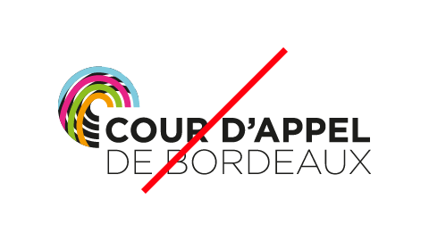
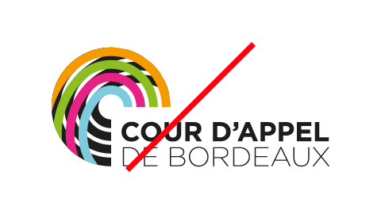
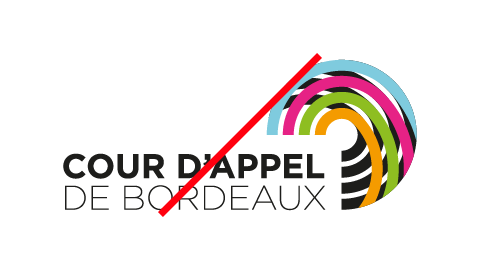

Cour d'appel
(Student Project)
*Winning Project*
Ce projet a pour objectifs de doter la cour d'appel de Bordeaux d’une identité visuelle en cohérence avec les composantes de la charte graphique ministère de la Justice ainsi que de donner une image moderne et dynamique de la justice du 21ème siècle.
-
The objectives of this project are to provide the Bordeaux Court of Appeal with a visual identity consistent with the components of the Ministry of Justice graphic charter as well as to give a modern and dynamic image of 21st century justice.
Présentation
- Presentation
Pour la construction de ce logotype, je me suis inspiré de l'architecture ronde de leur salle d'audience. Cette rondeur, couplée au fait que le sigle entoure la typographie, apporte un côté rassurant et protecteur, symbole d'une image positive de la justice.
L'enchevêtrement de cerlces représente la cour d'appel encrée dans sa cité, ainsi que l'image même de la métropole de Bordeaux.
Les différents croisements des lignes du logo représente quant à eux le réseau de la justice et sa communauté.
À cela s'ajoute la superposition des couleurs du ministère avec la couleur noir dans le fond, cela montre le principe de seconde chance, de renouveau.
Pour terminer, tous ces éléments s'assemblent pour former la lettre "C" de la cour d'appel.
Les maîtres mots de cette identité sont donc : Autorité régalienne / Modernité / Justice / Protection / Dynamisme.
-
For the construction of this logo, I was inspired by the round architecture of their courtroom. This roundness, coupled with the fact that the acronym surrounds the typography, brings a reassuring and protective side, symbol of a positive image of justice.
The tangle of circles represents the court of appeal anchored in its city, as well as the very image of the metropolis of Bordeaux.
The different intersections of the lines of the logo represent the justice network and its community.
To this is added the superposition of the colors of the ministry with the color black in the background, this shows the principle of second chance, of renewal.
Finally, all these elements come together to form the letter "C" of the court of appeal.
The key words of this identity are therefore: Regal authority / Modernity / Justice / Protection / Dynamism.
Recherches
- Research
Construction
- Construction
Tailles
- Sizes
Zone de protection
- Protection Zone
Couleurs principales
- Main Colors
cyan
RVB 126 / 204 / 223
CMJN 52 / 0 / 13 / 0
Hexa #7ECCDF
Pantone 306 C
magenta
RVB 231 / 32 / 134
CMJN 0 / 0 / 93 / 0
Hexa #E72086
Pantone 219 C
vert
pommeRVB 142 / 191 / 33
CMJN 52 / 0 / 100 / 0
Hexa #8EBF21
Pantone 368 C
orangé
RVB 245 / 156 / 0
CMJN 0 / 45 / 96 / 0
Hexa #F59C00
Pantone 1375 C
Interdits
- Bans
- 
Tailles
- 
Couleurs
- 
Position
-
Contraste

 Back to Top
Back to Top